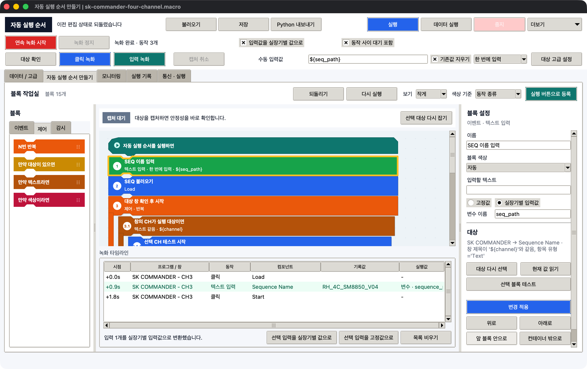
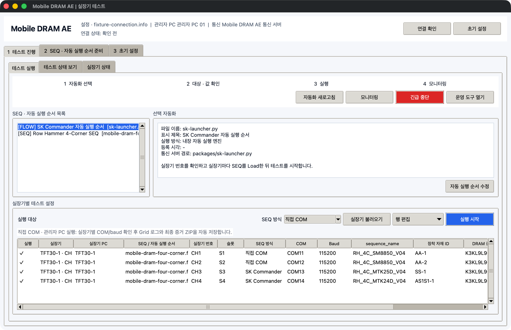
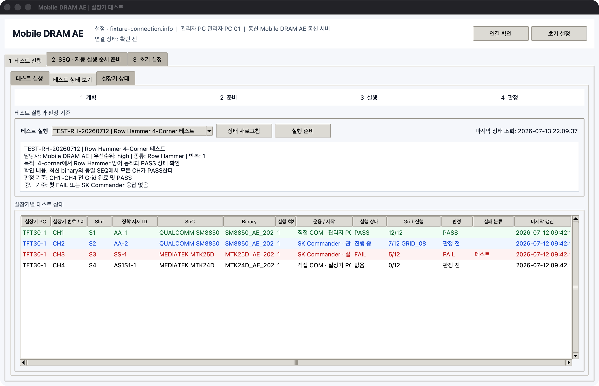

테스트 진행 절차
초기 설정 완료 후 SEQ 준비, 테스트 실행, 결과 확인 순서로 진행합니다.
전체 절차
1. 실장기 확인SoC, Binary, DRAM, Lot, 장착 자재 ID와 고장 상태를 확인합니다.
2. SEQ 준비SEQ를 열고 문법, Grid, 명령 순서와 파일 이름을 검사합니다.
3. 자동 실행 순서 준비SK Commander의 Load, 입력, Start 동작을 녹화하고 실장기별 입력값을 지정합니다.
4. 실행 전 점검선택한 실장기, SEQ, 입력값, SK Commander 인식 상태를 확인합니다.
5. 테스트 시작같은 SEQ를 여러 실장기에 보내되 장착 자재 ID는 각 실장기 값을 사용합니다.
6. 상태 확인진행 중에만 상태를 확인하고 PASS, FAIL, 중지와 Grid 진행 수를 봅니다.
1. 실장기 기본 정보 확인
1 테스트 진행 > 실장기 상태에서 사용할 실장기를 먼저 확인합니다.
| 확인 항목 | 확인할 내용 |
|---|---|
| 실장기 PC와 실장기 번호 | 예: TFT30-1 / CH1 |
| SoC | 예: MTK24D, MTK25D, SM8850 |
| Binary | 현재 올린 이름, 버전, 원본 폴더, 수정 시각 |
| 장착 자재 | DRAM 종류 / Part, Lot, AA-1 같은 장착 자재 ID |
| 고장 상태 | 정상 또는 사용 제한 여부 |
| SK Commander | 실장기 번호, SoC, 자재, 테스트 상태, 부팅 단계 연결 여부 |
고장 상태가 사용 불가 또는 수리 중인 실장기는 실행 대상에서 제외합니다. Binary가 비어 있거나 수정 시각이 오래되었다면 실제 값을 확인한 뒤 수정합니다.
2. SEQ 작성과 검사
2 SEQ · 자동 실행 순서 > SEQ 편집을 누릅니다.- 기존 SEQ를 열거나 새 SEQ를 작성합니다.
- Grid를 나타내는
#이름과 그 안에서 실행할 명령 순서를 확인합니다. 검사 · 패키지 준비를 누릅니다.- 검사 결과가
PASS인지 확인합니다.
검사는 다음 항목을 확인합니다.
;뒤에 불필요한 공백이 없는지- Grid 이름과 명령이 비어 있지 않은지
- 부팅 단계 이동을 위한
exit횟수와 명령 순서가 맞는지 - 필요한 clock, 온도, VDD 명령이 빠지지 않았는지
- 파일 이름이 해당 테스트의 이름 규칙에 맞는지
검사를 통과하지 않은 SEQ는 통신 서버에 등록할 수 없습니다. 현장 규칙이 프로그램 기본 검사보다 구체적인 경우에는 사내 승인 예시와 함께 최종 확인합니다.
3. 자동 실행 순서 준비
자동 실행 순서 편집을 엽니다.연속 녹화 시작을 누릅니다.- SK Commander에서 SEQ Load, 자재 입력, Start 순서로 조작합니다.
- 다시 편집 화면으로 돌아와
녹화 정지를 누릅니다. - 녹화 타임라인에서 클릭한 프로그램·창·항목과 입력값을 확인합니다.
- 실장기마다 달라지는 입력은
선택 입력을 실장기별 값으로바꿉니다. - 동작 이름, 순서, 반복과 조건을 정리한 뒤 각 블록을 한 번씩 시험합니다.
자세한 내용은 녹화와 동작 블록 편집을 참고합니다.

4. 실행표 만들기
1 테스트 진행 > 테스트 실행에서 실행표를 만듭니다.
자동화 새로고침을 눌러 등록한 SEQ와 자동 실행 순서를 불러옵니다.- 실행할 테스트 이름을 입력합니다.
- 사용할 SEQ와 자동 실행 순서를 선택합니다.
실장기 불러오기로 대상 행을 만듭니다.- 실행할 실장기만 선택합니다.
- 각 행의 SoC, Binary, 장착 자재 ID와 입력값을 확인합니다.
- SK Commander를 조작할지, 직접 COM으로 실행할지 실행 방식을 확인합니다.

실장기별 자재 ID 적용
다음처럼 같은 SEQ를 사용해도 장착 자재 ID는 실장기마다 다르게 유지됩니다.
| 대상 | SEQ | material_id |
|---|---|---|
| TFT30-1 / CH1 | RH_4C_SM8850_V04 |
AA-1 |
| TFT30-1 / CH2 | RH_4C_SM8850_V04 |
AA-2 |
| TFT31-2 / CH7 | RH_4C_SM8850_V04 |
AS1S1-1 |
자동 실행 순서의 입력 블록에 ${material_id}를 사용하면 실행 시 각 실장기 정보의 값으로 바뀝니다. 실행표에서 값을 수정하면 그 실행에만 적용할 수도 있습니다.
5. 실행 전 점검과 시작
실행 시작을 누르기 전에 다음을 확인합니다.
- 선택한 실장기 PC가 최근 상태를 보냈는지
- 대상 SK Commander 창이 열려 있고 실장기 번호가 맞는지
- SEQ와 자동 실행 순서가 최신 검사본인지
- 실장기별 필수 입력값이 비어 있지 않은지
- 같은 COM을 SK Commander와 직접 제어 화면에서 동시에 사용하지 않는지
- 사용 불가 또는 수리 중인 실장기가 포함되지 않았는지
모든 항목을 통과한 뒤 실행 시작을 누릅니다. 실장기 PC별 요청은 서로 분리되므로 일부 PC가 늦어도 다른 PC의 요청이 사라지지 않습니다.
6. 테스트 중 상태 확인
테스트 상태에서새로고침을 누릅니다.- 연속 확인이 필요한 동안만
모니터링 시작을 누릅니다. - 실장기별 상태와 Grid 진행 수를 확인합니다.
- FAIL 또는 중지가 발생하면 해당 행의 결과와 최근 로그를 먼저 봅니다.
- 화면 확인이 필요할 때만 대상 PC를 선택하고
전체 화면 보기를 요청합니다.
| 표시 | 뜻 | 작업자가 할 일 |
|---|---|---|
| 없음 | 실행 중인 테스트가 없음 | 시작 전 상태인지 확인 |
| 진행 중 | 테스트 실행 중 | Grid 진행과 최근 갱신 시각 확인 |
| PASS | 설정한 완료 조건 통과 | 결과와 로그 저장 여부 확인 |
| FAIL | 실패 조건 감지 | Grid, 부팅 단계, 최근 로그 확인 |
| 중지 | 정상 완료 전에 멈춤 | 중단 사유와 COM·프로그램 상태 확인 |

진행 중인 테스트가 없으면 연속 모니터링은 자동으로 끝납니다. 계속 켜 두는 용도로 사용하지 않습니다.
7. 종료 후 정리
- 모든 실장기의 최종 상태를 새로고침합니다.
- 필요하면
Excel 내보내기로 상태표를 저장합니다. - Binary 또는 장착 자재를 바꿨다면 실장기 정보를 수정합니다.
- 다음 테스트 전에 FAIL, 중지, 고장 상태가 남은 실장기를 확인합니다.